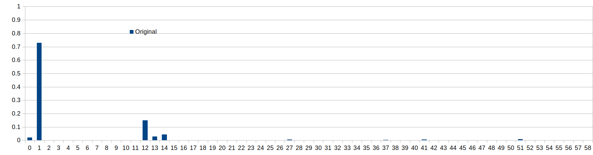
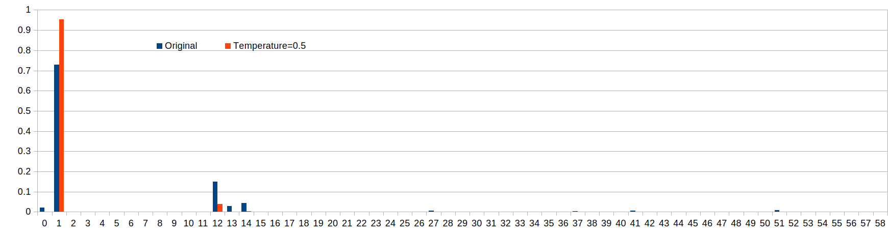
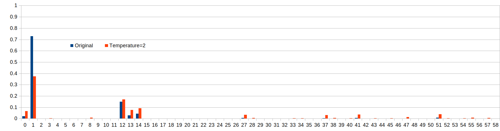

March 1, 2026
J. Heaton class_10_3_text_generation
The example in chapter 10.3 uses an LSTM network to generate text.
The code first turns a piece of text into sequences of maxlen (in this case 40) characters,
and the subsequent character for each sequence is used as the y value for the training.
In the inference/prediction phase, a sequence of characters is fed into the trained model, and the output is an
array of probabilities for each of the characters that were present in the original text.
..
The function sample() is called to return the next predicted character.
..
sample() function
The sample() function receives the predictions of each character as a probability.
preds = exp_preds / np.sum(exp_preds)
each value in a dataset is divided by the total sum of all values in that dataset. This results in a normalized
list where the sum of the new values equals 1.
temperature parameter
What does the temperature parameter in the language prediction do?
It varies the chances of characters with lower probabilities to be selected.
-
temperature < 1:
characters with lower probability than the one with the highest will be made even less likely to be
selected.
-
temperature = 1:
no change.
-
temperature > 1:
characters with lower probability than the one with the highest will be made more likely to be selected
Example of different temperature values
temperature=1.0: (original values)

temperature=0.5:

temperature=2.0:

The following table shows the probability of various characters to be selected:
| Index |
t=0.5
Probability |
t=1
Probability |
t=2
Probability |
| 1 |
95% |
73% |
37% |
| 12 |
4% |
15% |
17% |
t=0.5
ratio |
t=1
ratio |
t=2
ratio |
How much more likely is the character with index 1 to be selected versus the character with index 12?
We can look at the ratio of their probabilities p(1)/p(12).
| 23.4 |
4.8 |
2.2 |
We can see that when the temperature is 0.5, the character with index 1 becomes more likely to be selected.
It is obvious that with a temperature < 1, the character with the original greatest probability will become even
more likely to be selected, which can be considered the more "safe" approach.
The higher we set the temperature, the more chances the originally less likely characters get to be selected.